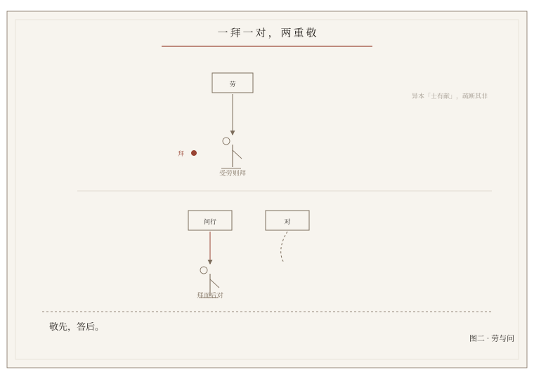

曲礼下 · 二·三十六 · 第 159 课
行还而君慰劳，则拜；君又问他路上的情形，则先拜而后对。注「亦起敬也。问行，谓道中无恙及所经过」。
说什么事：君劳之，则拜；问其行，拜而后对。
落在哪一层：礼。两句两句，一拜一对，同一节内两层敬。
为何编在此位：上节论私行出入，此节论归来见君之仪，紧承「反必告」之后。
【经】君勞之，則拜。問其行，拜而後對。
【注】亦起敬也。問行，謂道中無恙及所經過。
【疏】「君劳之，则拜」者，大夫士通如此，谓行还，而君若慰劳己之劳苦，则己拜之也。或有本云「士有献」字，非也。「问其行，拜而后对」者，君若问其行道中无恙及游涉所至，则又拜拜竟而起对也。先拜后答，急谢见问之恩也。
劳 慰劳。此指君慰臣行道之劳。
行 所行之路，所经之地。
无恙 疏「道中无恙及游涉所至」。无恙，安否。
拜竟而起对 疏语。拜毕然后起身作答。
急谢见问之恩 疏语。先拜之意，在急于谢问。
君慰劳他，他就拜。君又问他一路上如何，他先拜，然后回答。
一句慰劳，一拜；一问行程，又一拜。同一个人、同一场见面，礼数层层叠加。此节所记的，不是程序繁密，而是「每受一分意，先还一分敬」。
第一层 大夫士通礼 疏「大夫士通如此」。此节不别位之高下，凡臣皆同。
第二层 劳与问不同 劳者是君念其辛苦，问者君询其经历。受劳则拜，受问又拜——所谢者两事，故两拜。
第三层 拜而后对 不是先答再拜。疏「先拜后答，急谢见问之恩」。此一节次序，见礼之缓急：敬先，答后。
第四层 异文的处置 疏「或有本云『士有献』字，非也」——一本把上节之文掺入此节，疏断其非。读古书遇异文，须有断。此为汉唐注家之法，亦今日读书之法。
与今日何干 人问候你辛苦，先谢再叙。叙得再好，省了那一谢，礼就短了一寸。
| 左 | 右 |
|---|---|
| 君劳之，则拜 | 谢其念己之劳 |
| 问其行，拜而后对 | 谢其问，然后答 |
| 道中无恙 | 问安否 |
| 所经过 | 问所历之地 |
| 拜竟而起对 | 拜毕方答 |
| 急谢见问之恩 | 敬先，答后 |
| 异本「士有献」 | 疏断其非 |
画上下两段，同一位居者（只画俯身的肩背轮廓，不画正脸），居者上方各有两枚小方牌：上段一枚方牌下引一道向下短箭落到肩背，肩背旁标一枚小圆（示一拜）；下段两枚方牌并列，第一枚下有向下短箭落到肩背、肩背旁标小圆，第二枚下无箭、只有一条向右的短横线（示拜而后对，对方无回应之箭）。两段之间一细横线。不写文字。赭色只用在两段的短箭上。
